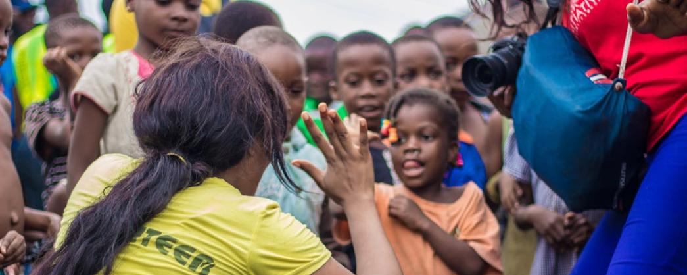

O movimento negro é o conjunto de movimentos sociais que lutam contra o racismo e a segregação racial, defendendo os direitos da população negra e a equiparação das condições entre negros e brancos na sociedade. Além disso, o movimento negro brasileiro procura resgatar o legado cultural dos afro-brasileiros, lutando pela valorização dessa cultura.
O movimento negro não é exclusivo do Brasil, estando presente em todos os locais com uma população significativa de origem africana. Países como Brasil e Estados Unidos têm grandes movimentos negros devido ao extenso histórico de discriminação racial.
Nos Estados Unidos, destacam-se o movimento pelos direitos civis dos negros na década de 1960, os Panteras Negras e, mais recentemente, o Black Lives Matter (Vidas Negras Importam). Na África do Sul, o movimento negro foi crucial na resistência contra o regime de segregação racial conhecido como Apartheid.
O movimento negro no Brasil não é homogêneo, consistindo em diferentes movimentos sociais que lutam por diversas pautas e são influenciados por várias correntes ideológicas. Em geral, o movimento negro busca:
A história do movimento negro brasileiro inicia-se no período colonial, com a resistência dos africanos escravizados. Revoltas, fugas, formação de quilombos e outras formas de resistência foram fundamentais para o sucesso do movimento abolicionista em 1888.
Após a abolição, os negros continuaram marginalizados, sem auxílio para a integração no pós-abolição. Sem terras ou educação, enfrentaram condições precárias de trabalho e vida.
Essa exclusão perpetuou a marginalização, e as manifestações culturais e práticas religiosas negras sofreram discriminação. Surgiram clubes negros como espaços de recreação e assistencialismo, que eventualmente produziram jornais e revistas para denunciar o racismo. Esses impressos, concentrados em São Paulo, são conhecidos como Imprensa Negra Paulista.